Orchestration means managing container life cycle from building them to deploying (which requires provisioning of appropriate compute resources, storage resources, networking resources), scaling, load-balancing and other tasks, while accounting for failures throughout.
While there are many orchestration solutions, we will focus on a couple of them: ECS by AWS and Kubernetes (local hosted solution and managed by GCP). While there is Elastic Kubernetes Service (EKS) by AWS as well, we will omit it here, as the ideas are the same.
Why should data science professions know such orchestration solutions?
Next, we will (a) deploy our model serving docker image to the AWS container registry ECR, (b) use ECS to deploy a container based on that image, and © set up a load balancer that mediates requests to the prediction model.
We will create a docker image locally (can also be done on EC2) and push it to an ECR repository that we will create.
Navigate to the ECR link on the AWS console.
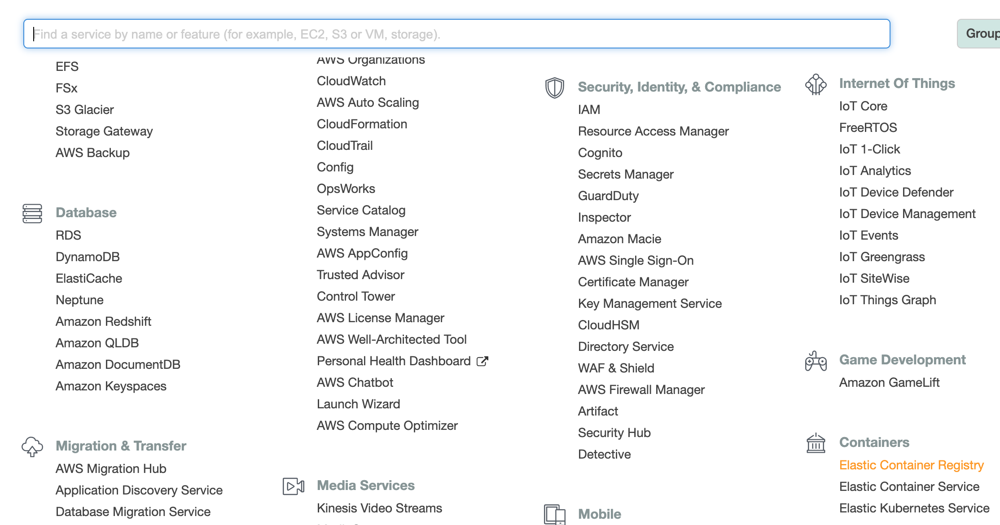
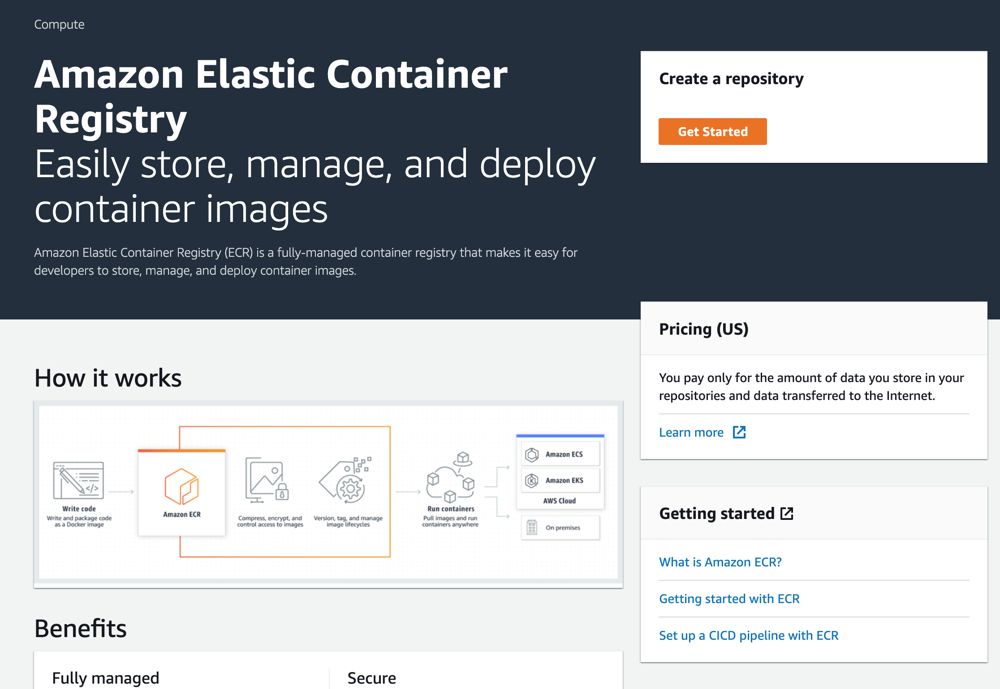
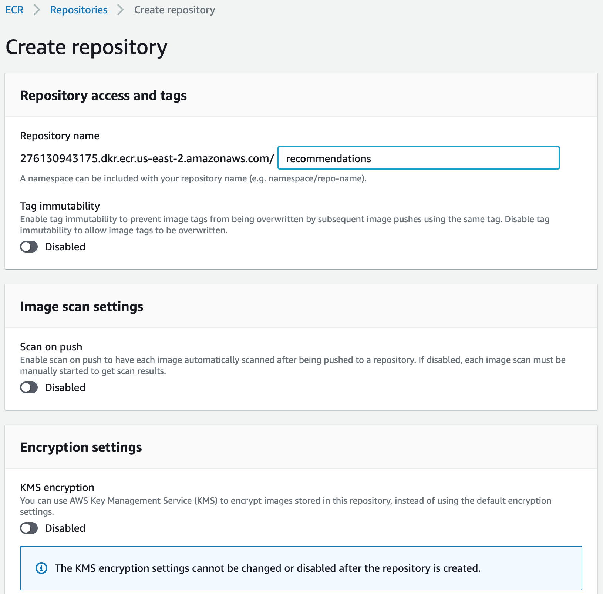
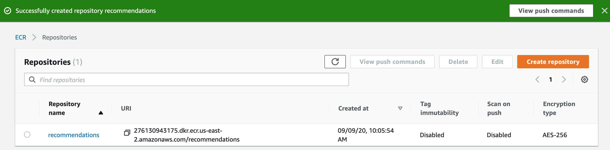
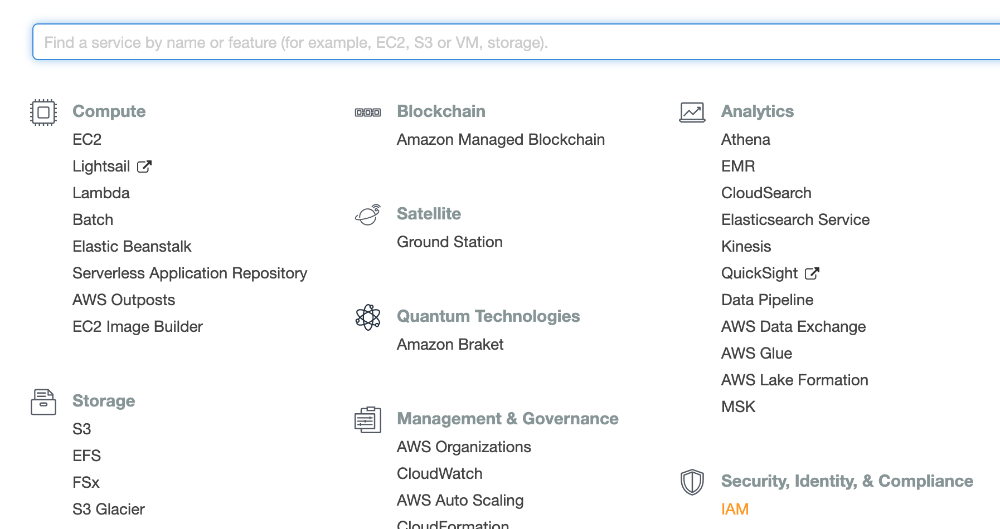
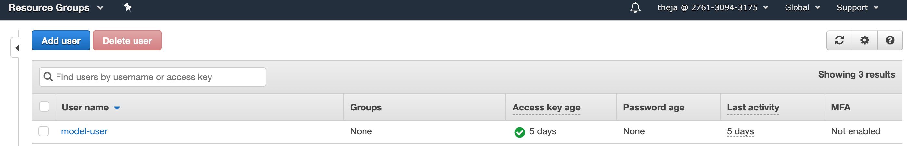
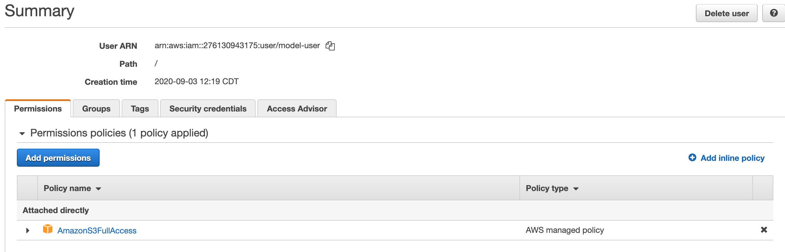
AmazonEC2ContainerRegistryFullAccess.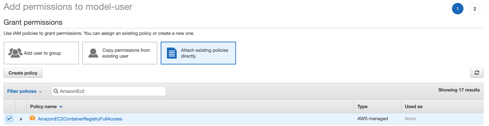
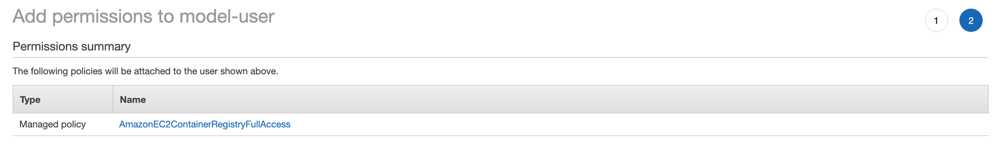
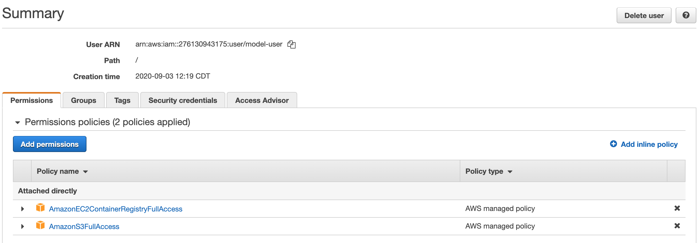
We will use the following flask app that uses the pytorch model to serve recommendations:
from surprise import Dataset
import torch
import pandas as pd
import flask
class MF(torch.nn.Module):
def __init__(self, n_user, n_item, k=18, c_vector=1.0, c_bias=1.0):
super(MF, self).__init__()
self.k = k
self.n_user = n_user
self.n_item = n_item
self.c_bias = c_bias
self.c_vector = c_vector
self.user = torch.nn.Embedding(n_user, k)
self.item = torch.nn.Embedding(n_item, k)
# We've added new terms here:
self.bias_user = torch.nn.Embedding(n_user, 1)
self.bias_item = torch.nn.Embedding(n_item, 1)
self.bias = torch.nn.Parameter(torch.ones(1))
def __call__(self, train_x):
user_id = train_x[:, 0]
item_id = train_x[:, 1]
vector_user = self.user(user_id)
vector_item = self.item(item_id)
# Pull out biases
bias_user = self.bias_user(user_id).squeeze()
bias_item = self.bias_item(item_id).squeeze()
biases = (self.bias + bias_user + bias_item)
ui_interaction = torch.sum(vector_user * vector_item, dim=1)
# Add bias prediction to the interaction prediction
prediction = ui_interaction + biases
return prediction
def loss(self, prediction, target):
loss_mse = F.mse_loss(prediction, target.squeeze())
# Add new regularization to the biases
prior_bias_user = l2_regularize(self.bias_user.weight) * self.c_bias
prior_bias_item = l2_regularize(self.bias_item.weight) * self.c_bias
prior_user = l2_regularize(self.user.weight) * self.c_vector
prior_item = l2_regularize(self.item.weight) * self.c_vector
total = loss_mse + prior_user + prior_item + prior_bias_user + prior_bias_item
return total
def get_top_n(model,testset,trainset,uid_input,n=10):
preds = []
try:
uid_input = int(trainset.to_inner_uid(uid_input))
except KeyError:
return preds
# First map the predictions to each user.
for uid, iid, _ in testset: #inefficient
try:
uid_internal = int(trainset.to_inner_uid(uid))
except KeyError:
continue
if uid_internal==uid_input:
try:
iid_internal = int(trainset.to_inner_iid(iid))
movie_name = df.loc[int(iid),'name']
preds.append((iid,movie_name,float(model(torch.tensor([[uid_input,iid_internal]])))))
except KeyError:
pass
# Then sort the predictions for each user and retrieve the k highest ones
if preds is not None:
preds.sort(key=lambda x: x[1], reverse=True)
if len(preds) > n:
preds = preds[:n]
return preds
app = flask.Flask(__name__)
#Data
df = pd.read_csv('./movies.dat',sep="::",header=None,engine='python')
df.columns = ['iid','name','genre']
df.set_index('iid',inplace=True)
data = Dataset.load_builtin('ml-100k',prompt=False)
'''
Exercise: remove the above dependency.
Currently it downloads data from grouplens website and stores in .surprise folder in $HOME
'''
trainset = data.build_full_trainset()
testset = trainset.build_anti_testset()
#Parameters that are needed to reload the model from disk
k = 10 #latent dimension
c_bias = 1e-6
c_vector = 1e-6
model = MF(trainset.n_users, trainset.n_items, k=k, c_bias=c_bias, c_vector=c_vector)
model.load_state_dict(torch.load('./pytorch_model'))
model.eval() #no need for gradient computations in this setting
# define a predict function as an endpoint
@app.route("/", methods=["GET"])
def predict():
data = {"success": False}
# check for passed in parameters
params = flask.request.json
if params is None:
params = flask.request.args
if "uid" in params.keys():
data["response"] = get_top_n(model,testset,trainset,params['uid'],n=10)
data["success"] = True
# return a response in json format
return flask.jsonify(data)
# start the flask app, allow remote connections
app.run(host='0.0.0.0', port=80)
The corresponding Dockerfile is below. The key additional files in addition to recommend.py above are:
pytorch_model
FROM continuumio/miniconda3:latest
RUN conda install -y flask pandas \
&& conda install -c conda-forge scikit-surprise \
&& conda install pytorch torchvision cpuonly -c pytorch
COPY recommend.py recommend.py
COPY movies.dat movies.dat
COPY pytorch_model pytorch_model
ENTRYPOINT ["python","recommend.py"]
The miniconda image above is from https://hub.docker.com/r/continuumio/miniconda3.
Building an image based on the above file and running our prediction locally can be done using the following commands:
docker image build -t "prediction_service" .
docker run -d -p 5000:5000 prediction_service
docker ps -a #check what all containers were/are running
docker kill container_id #after checking that the service runs, we can safely stop and delete the container.
docker rm container_id
If we run a container based on this image, the python file and others will be in the root (/) folder and will be run by the root user. While we will not improve this here, it is better to run services as non-root users.
We will follow the instruction here to push our image to the repository we just created.
Assuming you have the aws CLI configured with the secret keys, run the following command:
aws ecr get-login-password --region region | docker login --username AWS --password-stdin aws_account_id.dkr.ecr.region.amazonaws.com
Substitute region with us-east-1 etc (check the URL on the ECR page) as well as aws_account_id with the actual account id. We should get a prompt saying ‘Login Succeeded’.
Lets tag our image before sending it to ECR (replace account id and region below as well):
(datasci-dev) ttmac:docker-prediction-service theja$ docker tag prediction_service aws_account_id.dkr.ecr.region.amazonaws.com/models:recommendations
(datasci-dev) ttmac:docker-prediction-service theja$ docker images
REPOSITORY TAG IMAGE ID CREATED SIZE
aws_account_id.dkr.ecr.region.amazonaws.com/recommendations pytorch_model 364179b27eb1 21 minutes ago 2.06GB
weather_service latest 20d340f941c0 2 days ago 496MB
debian buster-slim c7346dd7f20e 5 weeks ago 69.2MB
continuumio/miniconda3 latest b4adc22212f1 6 months ago 429MB
hello-world latest bf756fb1ae65 8 months ago 13.3kB
Pushing to ECR is achieved by the following:
docker push aws_account_id.dkr.region.amazonaws.com/recommendations:pytorch_model
You should see the update progress (this is a large upload!)
The push refers to repository [aws_account_id.dkr.ecr.us-east-2.amazonaws.com/recommendations]
a5649bbe3e5f: Pushed
5c87fc4d582f: Pushed
e1e8d92205bf: Pushed
5c6c81390816: Pushing [=========================> ] 848.8MB/1.635GB
fcd8d39597dd: Pushed
875120aa853c: Pushed
f2cb0ecef392: Pushed
And the push conclusion:
(datasci-dev) ttmac:docker-prediction-service theja$ docker push aws_account_id.dkr.ecr.us-east-2.amazonaws.com/recommendations:pytorch_model
The push refers to repository [aws_account_id.dkr.ecr.us-east-2.amazonaws.com/recommendations]
a5649bbe3e5f: Pushed
5c87fc4d582f: Pushed
e1e8d92205bf: Pushed
5c6c81390816: Pushed
fcd8d39597dd: Pushed
875120aa853c: Pushed
f2cb0ecef392: Pushed
pytorch_model: digest: sha256:af5dfaf227cd96c4ca8ca952c511fb4274c59d76574726462137bc7c4230be07 size: 1793
On the ECR page, if we look at the images in the recommendations repository, it will contain our recently uploaded image.
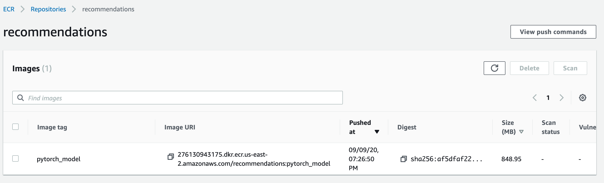
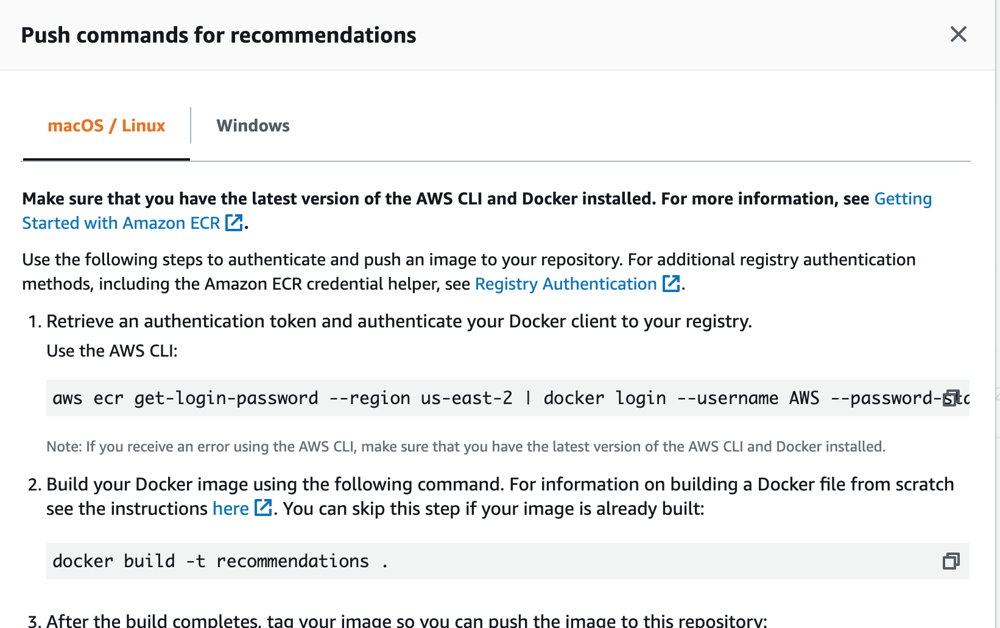